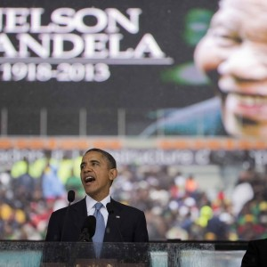

Obama al Memorial per Mandela:
"Ci ha insegnato il potere delle azioni, ma anche delle idee"
A Graça Machel e alla famiglia Mandela; al presidente Zuma e ai membri del governo; ai capi di Stato e di governo, passati e presenti; agli illustri ospiti voglio dire che è un grandissimo onore trovarmi qui con voi oggi a onorare una vita diversa da qualsiasi altra.
Al popolo sudafricano - di ogni razza ed estrazione sociale - il mondo intero dice grazie per aver condiviso Nelson Mandela con noi tutti. La sua lotta è stata la vostra lotta. Il suo trionfo è stato il vostro trionfo. La vostra dignità e la vostra speranza si sono espresse al meglio nella sua vita, e la vostra libertà e la vostra democrazia sono l'apprezzata eredità che egli ha lasciato.
È difficile fare l'elogio di qualsiasi uomo, racchiudere nelle parole non soltanto i fatti e le date che ne hanno segnato la vita, ma la verità fondamentale e intima di quella persona, le sue gioie profonde e i suoi dolori; i momenti di pace e le qualità che ne hanno illuminato l'anima. Quanto maggiormente è difficile farlo nel caso di un gigante della storia, che ha messo una nazione intera in marcia verso la giustizia e così facendo ha messo in marcia miliardi di persone in tutto il mondo!
Nato durante la Prima guerra mondiale, molto lontano dai corridoi del potere, dopo un'infanzia trascorsa a fare il pastore di bestiame e a imparare dagli anziani della sua tribù Thembu, Madiba sarebbe emerso come l'ultimo grande liberatore del XX secolo. Come Gandhi, egli avrebbe guidato un movimento di resistenza, un movimento che agli esordi aveva ben poche prospettive di successo. Come King, egli avrebbe dato voce forte e potente alle richieste degli oppressi e alla necessità morale di giustizia razziale. Avrebbe affrontato una prigionia disumana, iniziata all'epoca di Kennedy e Krusciov e conclusasi nel periodo finale della Guerra Fredda. Uscendo dalla prigione, senza la forza delle armi, al pari di Lincoln avrebbe unificato il paese proprio mentre esso rischiava di lacerarsi. Come i padri fondatori dell'America, egli avrebbe dato vita a un ordine costituzionale per difendere la libertà a vantaggio delle generazioni successive, assumendosi un impegno nei confronti della democrazia e della legalità ratificato in seguito non soltanto dalla sua elezione, ma dalla sua volontà di abbandonare il suo mandato.
Tenuto conto della sua incredibile vita e dell'adorazione che si è guadagnato così meritatamente, si sarebbe tentati di ricordare Nelson Mandela come un'icona, sorridente e serena, distaccata dalle occupazioni ordinarie di uomini comuni. Ma Madiba stesso si è sempre opposto strenuamente a questo ritratto senza vita. Al contrario, egli ha sempre insistito per condividere con noi i suoi dubbi e i suoi timori; i suoi errori di valutazione insieme alle sue vittorie. "Non sono un santo" diceva, "a meno che non si pensi che un santo è un peccatore che continua a mettersi alla prova".
È proprio perché egli riusciva ad ammettere di non essere perfetto - e perché sapeva essere così pieno di buon'umore, addirittura di furbizia, malgrado il pesante fardello che trasportava - che noi lo abbiamo amato. Non era un busto di marmo. Era un uomo fatto di carne e di sangue, un figlio e un marito, un padre e un amico. Ecco perché abbiamo appreso così tante cose da lui. Ecco perché possiamo apprenderne ancora molte altre da lui. Perché niente di ciò che egli è riuscito a raggiungere era scontato. Nell'arco della sua vita abbiamo visto un uomo guadagnarsi un posto nella storia lottando, con avvedutezza, persistenza e fede. Egli ci dice che cosa è possibile non soltanto nelle pagine di polverosi libri di storia, ma anche nelle nostre stesse vite.
Mandela ci ha dimostrato tutto il potere d
ell'azione, dell'assumersi dei rischi nell'interesse degli ideali. Forse Madiba aveva ragione quando diceva di aver ereditato da suo padre un fiero spirito di ribellione e un tenace senso di giustizia. Di sicuro, egli ha condiviso con milioni di neri e di sudafricani di colore tutta la rabbia scaturita da migliaia di offese, migliaia di umiliazioni, migliaia di momenti da non ricordare, e il desiderio di lottare contro il sistema che imprigionava il mio popolo.
Ma al pari di altri giganti facenti parte da subito dell'Anc - Sisulu e Tambo - Madiba ha saputo tenere a freno e domare la sua rabbia. Ha incanalato il suo desiderio di combattere in un'organizzazione, in piattaforme e strategie operative, così che gli uomini e le donne potessero prendere le difese della loro stessa dignità. Oltre a ciò egli ha accettato le conseguenze delle proprie azioni, sapendo che tenere testa agli interessi dei potenti e alle ingiustizie comporta un prezzo da pagare. "Io ho combattuto contro il dominio dei bianchi e ho combattuto contro il dominio dei neri", disse durante il suo processo del 1964. "Ho accarezzato e nutrito l'ideale di una società libera e democratica, nella quale tutti possano vivere in armonia e con pari opportunità. È un ideale per il quale spero di vivere e che spero di raggiungere. Ma se ce ne sarà bisogno, questo è un ideale per il quale sono disposto a dare la mia vita".
Mandela ci ha insegnato il potere dell'azione, ma anche delle idee; l'importanza della ragione e delle giuste argomentazioni; la necessità di studiare non soltanto coloro con i quali vai d'accordo, ma anche coloro con i quali non vai d'accordo. Mandela ha capito che le idee non possono essere imprigionate tra le mura di un carcere, né messe a tacere dalla pallottola di un cecchino. Egli ha trasformato il suo processo nella denuncia dell'apartheid grazie alla sua eloquenza e alla sua passione, ma anche grazie ai suoi studi e alla sua formazione di avvocato. Ha trascorso i decenni passati in prigione a rendere più affilati i suoi ragionamenti, ma anche a diffondere la sua sete di sapere agli altri del movimento. E ha appreso la lingua e le usanze dei suoi oppressori, così da poter riuscire meglio un giorno a comunicare loro in che modo la loro libertà dipendesse dalla sua.
Mandela ha dimostrato che l'azione e le idee non bastano. A prescindere da quanto siano giuste, devono essere incise all'interno di leggi e istituzioni. Era un uomo pratico, che metteva alla prova i suoi principi rispetto alla dura apparenza delle circostanze e della storia. Era intransigente per ciò che concerne i principi di fondo, ed è per questo che ha potuto respingere seccamente le offerte di libertà condizionata, ricordando al regime dell'apartheid che i prigionieri non possono stipulare contratti. Ma come ha dimostrato in scrupolosi negoziati per trasferire il potere e redigere nuove leggi, non aveva paura di scendere a compromessi per il bene di un obiettivo superiore. E poiché non è stato soltanto un leader di un movimento, ma un abile politico, questa democrazia multirazziale si meritava la Costituzione che è stata messa a punto; fedele alla sua visione delle leggi che proteggono i diritti delle minoranze come pure quelli della maggioranza, e la preziosa libertà di ogni sudafricano.
Infine, Mandela ha compreso lo spirito umano e come esso sia legato a quello di tutti. C'è una parola in Sudafrica, Ubuntu, che descrive e condensa questo suo immenso dono: egli ha saputo vedere che siamo tutti legati gli uni agli altri in modi invisibili e che sfuggono allo sguardo; che esiste unione nel genere umano; che possiamo conseguire il nostro pieno successo condividendolo con gli altri e prendendoci cura di chi abbiamo attorno. Non possiamo sapere quanto di ciò fosse già innato in lui, o quanto si sia plasmato e forgiato nella sua buia cella solitaria. Ma ne ricordiamo i gesti, piccoli e grandi, come presentare i suoi carcerieri come ospiti d'onore alla sua cerimonia di insediamento come presidente; scendere in campo indossando l'uniforme degli Springbok; aver trasformato una tragedia della sua famiglia nell'invito a lottare contro l'Hiv/Aids. Questi suoi gesti piccoli e grandi hanno svelato tutta la sua profonda empatia e comprensione. Egli non soltanto ha incarnato l'Ubuntu, il senso di umanità. Ha insegnato a milioni di persone a trovare dentro di sé quella stessa verità. C'è stato bisogno di un uomo come Madiba per liberare non soltanto il carcerato, ma anche il carceriere; per dimostrare che ci si deve fidare degli altri così che gli altri si fidino di te; per insegnare che riconciliarsi non significa ignorare un passato crudele, ma che riconciliarsi è un mezzo per opporre a quel crudele passato l'inclusione, la generosità e la verità. Ha cambiato le leggi, ma anche i cuori.
Per il popolo sudafricano, per coloro che egli ha ispirato in tutto il pianeta, il trapasso di Madiba è giustamente motivo di lutto, e occasione per celebrarne la vita eroica, ma io credo che la sua morte debba anche invogliare ciascuno di noi a un'autoriflessione. Con onestà, e indipendentemente dalla nostra posizione o dalle circostanze della nostra vita, dobbiamo chiederci: quanto bene ho applicato queste lezioni nella mia stessa vita?
Questa è una domanda che io rivolgo a me stesso, come uomo e come presidente. Sappiamo che come il Sudafrica anche gli Stati Uniti hanno dovuto superare secoli di oppressione razziale. Come è stato vero qui, ci sono voluti i sacrifici di un numero incalcolabile di persone, note e ignote, per vedere l'alba di un giorno nuovo. Michelle e io abbiamo beneficiato di quella lotta. Ma in America e in Sudafrica, e in molti paesi di tutto il pianeta, non possiamo permettere che il progresso oscuri il fatto che il nostro compito non può dirsi concluso. Le lotte che puntano alla vittoria dell'eguaglianza e al suffragio universale possono non essere caratterizzate da quella stessa drammaticità e limpidezza morale di quelle combattute in precedenza, ma non per questo sono meno importanti. Perché ancora oggi in tutto il mondo vediamo bambini patire la fame e soffrire per le malattie, vediamo scuole fatiscenti e scarse prospettive per il futuro. Ancora oggi in tutto il mondo uomini e donne sono messi in prigione per le loro idee politiche e sono perseguitati per il loro aspetto fisico, per la loro pratica devozionale, per la persona che amano.
Anche noi dobbiamo agire per il bene della giustizia. Anche noi dobbiamo agire perché la pace prevalga. Troppi di noi sono pronti ad abbracciare con gioia l'eredità di Madiba della riconciliazione razziale ma oppongono una strenua resistenza a riforme anche modeste che potrebbero porre fine alla povertà cronica e alle crescenti ineguaglianze. Ci sono troppi leader che si dichiarano solidali con la lotta di Madiba per la libertà, ma che non tollerano il dissenso dei loro stessi popoli. E ci sono troppi di noi che ancora restano in disparte, comodamente compiacenti o cinici quando dovrebbero far ascoltare la loro voce.
Non esistono facili soluzioni per i problemi con i quali siamo alle prese oggi: come promuovere l'eguaglianza e la giustizia, come affermare la libertà e i diritti umani; come porre fine ai conflitti e alle guerre settarie. Ma neppure per quel bambino di Qunu c'erano facili risposte. Nelson Mandela ci rammenta che ogni cosa può sembrare impossibile finché non la si realizza. Il Sudafrica ci dimostra che questa è la verità. Il Sudafrica ci mostra che possiamo cambiare. Noi possiamo scegliere di vivere in un mondo non definito dalle nostre differenze, ma dalle nostre comuni speranze. Possiamo scegliere un mondo definito non dal conflitto, ma dalla pace, dalla giustizia, dalle pari opportunità.
Non vedremo mai altri Nelson Mandela. Ma permettetemi di dire ai giovani africani e ai giovani di tutto il mondo che voi potete fare vostre le lotte e le conquiste della sua vita. Oltre trenta anni fa, quando ero ancora uno studente, appresi chi era Madiba e quali fossero i conflitti della sua terra. Conoscerlo scosse qualcosa dentro di me, nel profondo. Mi risvegliò e mi mise in grado di far fronte alle mie responsabilità nei confronti degli altri e di me stesso, e mi avviò lungo la strada che mi avrebbe portato dove mi trovo oggi. Se da un lato so che non riuscirò a eguagliare l'esempio di Madiba, dall'altro so che egli vuole che io voglia migliorare. Egli fa appello a ciò che di meglio c'è dentro di noi. Quando questo grande liberatore sarà sepolto per riposare in pace; quando saremo ritornati nelle nostre città e nei nostri villaggi e avremo ripreso le nostre routine quotidiane, proviamo a cercare dentro di noi, nel profondo di noi stessi, la sua grande forza, la sua grandezza d'animo. E quando la notte si farà scura, quando l'ingiustizia renderà pesante i nostri cuori, o quando i nostri piani ben delineati ci sembreranno irraggiungibili, pensiamo a Madiba, pensiamo alle parole che nelle quattro mura della sua cella gli arrecarono tanto conforto: "Non importa quanto stretto sia il passaggio, quanto piena di castighi la vita: io sono il padrone del mio destino; io sono il capitano della mia anima".
Che grande anima è stata. Ci mancherà moltissimo. Che Dio benedica Nelson Mandela e il popolo sudafricano.